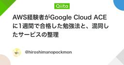

GoogleCloudタグが付けられた新着記事 - Qiita
タグの概要・特徴Google Cloud は、Googleが提供するクラウドコンピューティングサービスです。2008年にGoogle App Engineとして初めてリリースされ、その後、様々なサービスを統合してGoogle Cloudとして提供されています。Google Cloudは、インフラストラクチャ・サービス（IaaS）、プラットフォーム・サービス（PaaS）、そしてソフトウェア・サービス（SaaS）を提供し、データ分析、機械学習、ストレージ、ネットワーキング、ビッグデータなど多岐にわたる機能を備えています。主な用途としては、以下のような分野があります：データ分析とビッグデータ: BigQueryやDataflowを使った大規模データの分析。AIと機械学習: TensorFlowやAI Platformを使用して高度なAIモデルを構築。アプリケーション開発: App EngineやKubernetes Engineでの迅速なアプリケーション開発とデプロイ。ストレージとデータベース: Cloud Storage、Cloud SQL、Spannerなどを使用したデータ管理。ネットワーキング: 高度なネットワークサービスを活用してグローバルにサービスを展開。Google Cloudの利点スケーラビリティ: 必要に応じてリソースをスケールでき、大規模なワークロードを処理可能。グローバルインフラ: Googleのグローバルなネットワークを利用し、高速かつ信頼性の高いサービスを提供。セキュリティ: Googleのセキュリティ技術を活用し、データやアプリケーションを保護。先進的な機械学習: GoogleのAI技術を簡単に利用でき、先進的な機械学習プロジェクトを推進。コスト効率: 従量課金制による柔軟なコスト管理が可能。リファレンス公式サイト: Google CloudWikipedia: Google Cloud - Wikipedia関連タグCloudBigQueryFirebase
フィード


